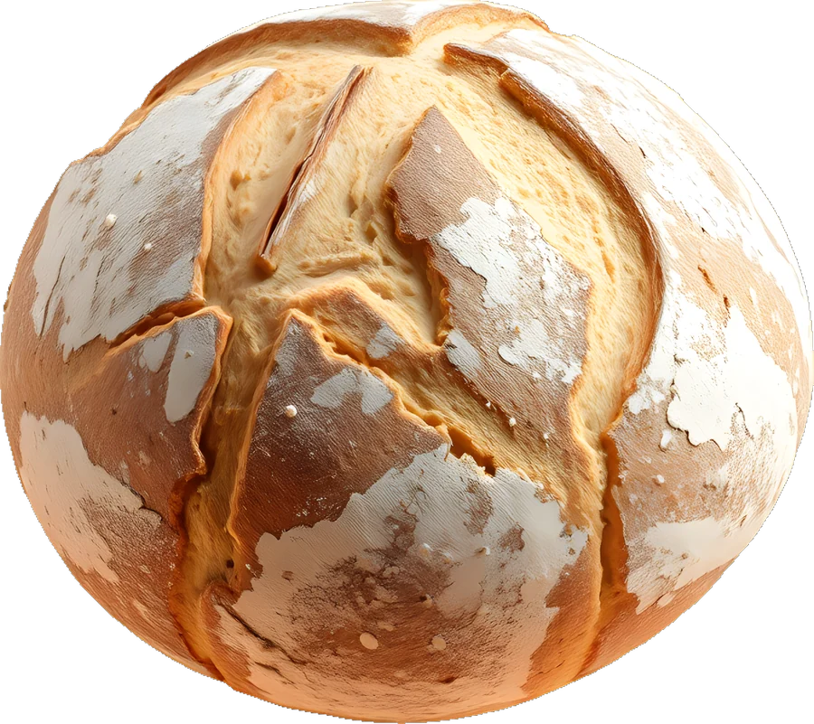
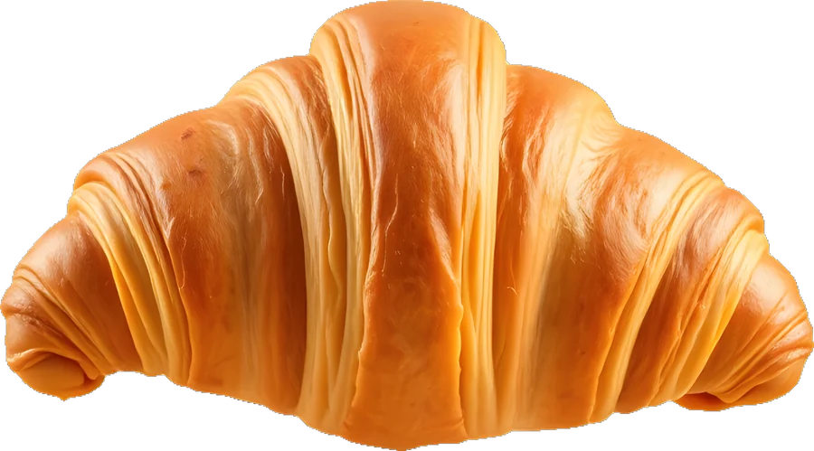
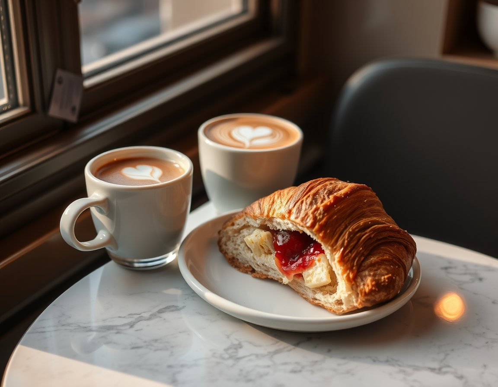
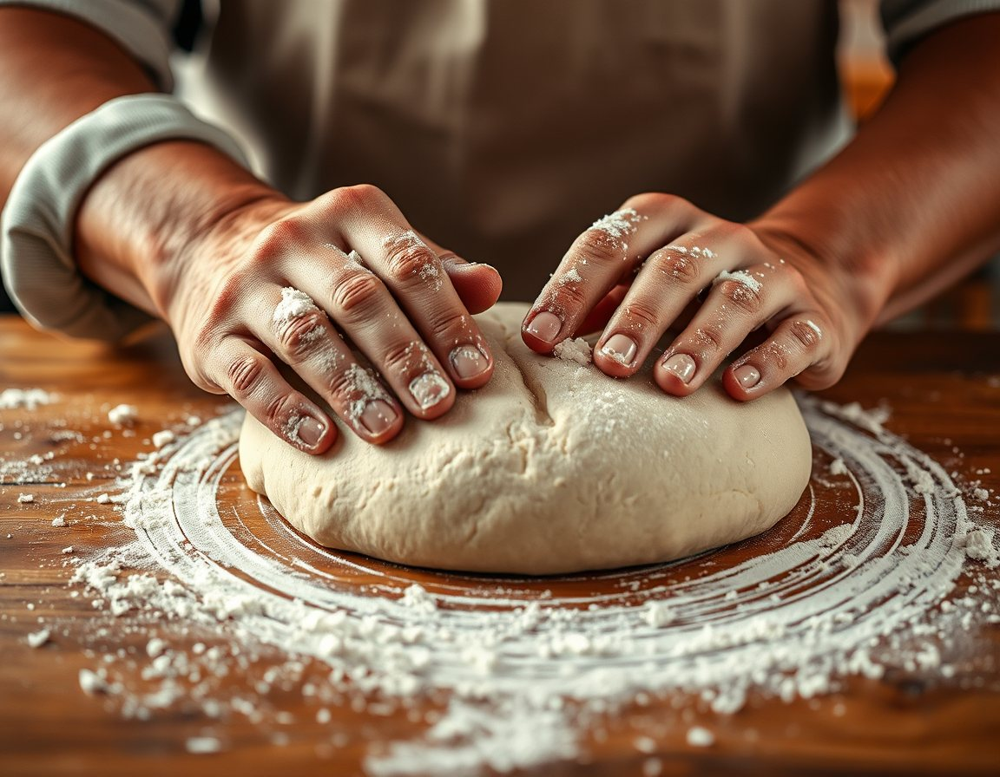
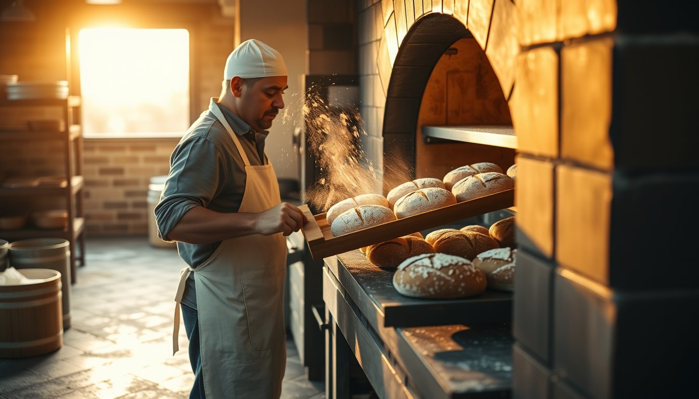

Köy ekmeği
Ekşi maya, taş değirmen un · 900 g
150 ₺Sıcak
48 saat mayalanan ekşi maya ekmekler, 27 katlı tereyağlı kruvasanlar ve yanına iyi bir kahve. Gün boyu beş kez fırından sıcak çıkıyor.

Stok durumu gün içinde güncellenir. Fiyatlar örnektir.

Ekşi maya, taş değirmen un · 900 g
Tereyağlı, 27 kat

Kakule ve tarçın, portakal kabuğu

Kruvasan, tereyağı, reçel ve kahve
Acele edilmiş ekmek hamur gibi kalır. Biz beklemeyi seviyoruz.
12 yıllık anaç mayamızı un ve suyla besliyoruz.
Hamur 4°C'de yavaşça olgunlaşır, lezzeti derinleşir.
250°C'de buharla pişer, kabuk çıtırlaşır.

